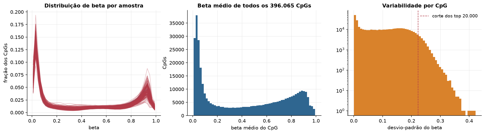
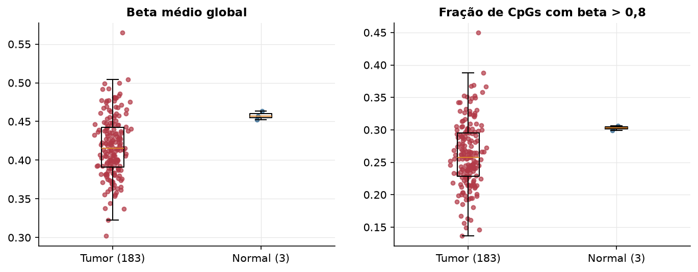
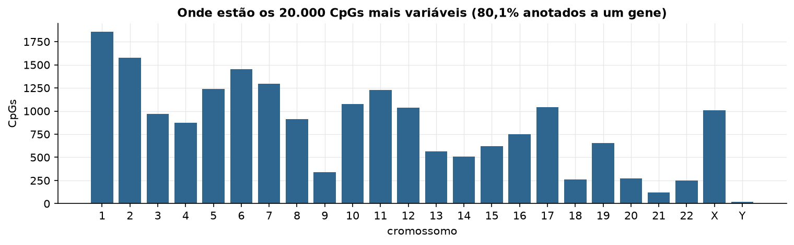
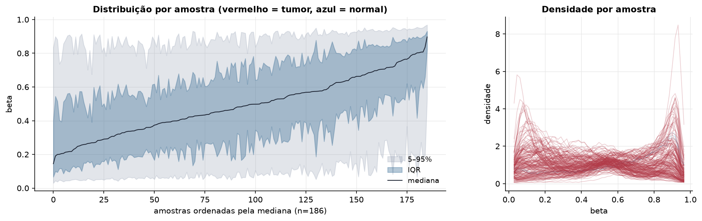
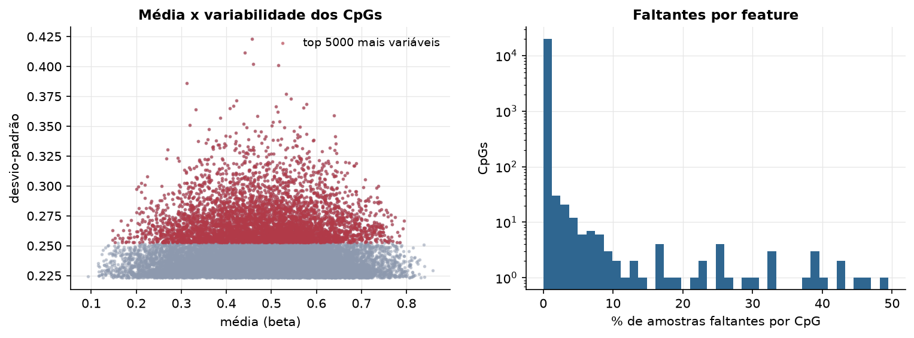
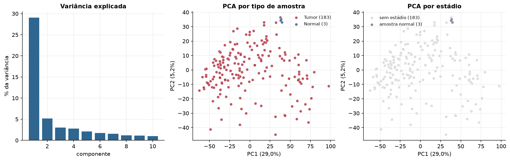
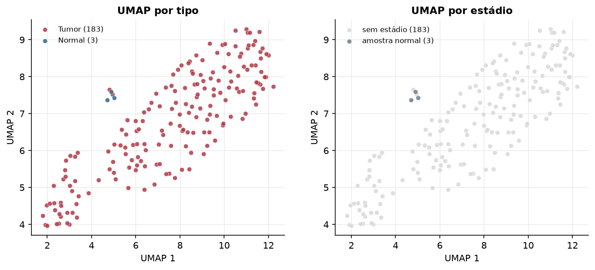
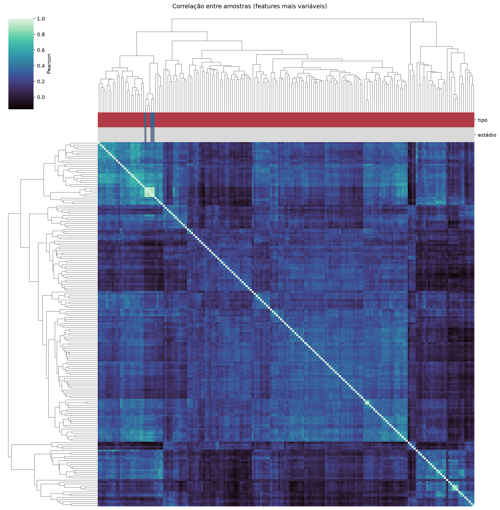
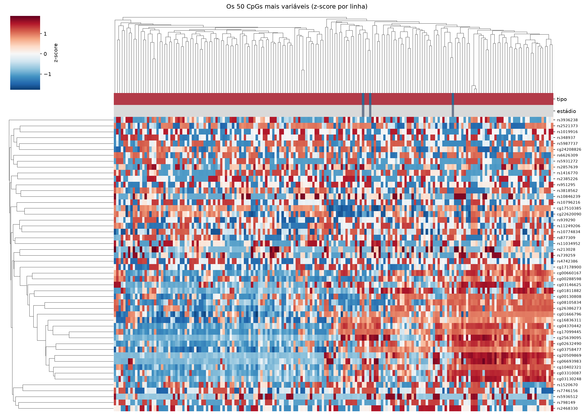
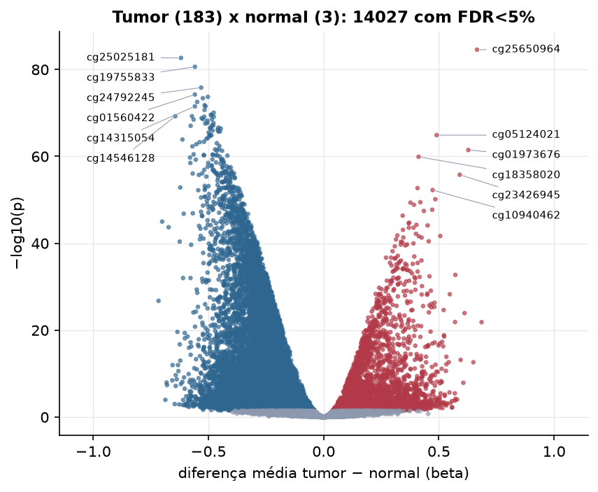

PCPG · Metilação do DNA (450k)
Illumina Infinium HumanMethylation450, valores beta (0 a 1) · gerado em 22/10/2026 02:52
396.065CpGs medidos
391.532CpGs sem faltante
20.000CpGs
183amostras tumorais
3amostras normais
0,1%valores faltantes
Fonte: PanCanAtlas HM450 via API do Xena
O array tem ~485 mil CpGs. Para não ocupar espaço, guardamos estatísticas de todos os CpGs e só os 20.000 mais variáveis para PCA, UMAP e heatmaps.
Principais resultados
- A distribuição de beta é bimodal: a maioria dos CpGs está quase toda desmetilada (perto de 0, típico de ilhas CpG em promotores) ou quase toda metilada (perto de 1, corpo gênico e regiões intergênicas). 38,1% dos CpGs têm beta médio intermediário (0,2 a 0,8).
- Beta médio global: 0,416 nos tumores e 0,457 nos normais (hipometilação global no tumor, como é comum em câncer).
- 20.000 CpGs medidos em 186 amostras (183 tumorais e 3 normais); 0,1% dos valores estão faltando.
- Os dois primeiros componentes principais explicam 29,0% e 5,2% da variância das features mais variáveis.
- Correlação mediana entre amostras: 0,20.
- Tumor x normal: 14027 CpGs diferentes com FDR < 5% (3136 maiores no tumor, 10891 maiores no normal; 3 pacientes têm o par tumor-normal).
- Mais aumentados no tumor: cg25650964, cg05124021, cg01973676, cg18358020, cg23426945, cg17962384, cg10940462, cg24058604.
- Mais reduzidos no tumor: cg25025181, cg19755833, cg24792245, cg01560422, cg02596499, cg22330924, cg03832737, cg05769505.
- Associações clínicas com p < 0,05 nos componentes principais: PC3 com sexo (p=6.6e-07); PC1 com idade (p=0.02); PC2 com idade (p=0.0012); PC2 com sobrevida (p=0.014); PC3 com sobrevida (p=0.00022).
Distribuição global



Exploração dos CpGs mais variáveis
Distribuição dos valores


Estrutura das amostras




Tumor x normal

Features mais diferentes entre tumor e normal
| diferenca_tumor_menos_normal | t | p | fdr | |
|---|---|---|---|---|
| cg25650964 | 0.665 | 37.035 | 2.74e-85 | 5.49e-81 |
| cg25025181 | -0.619 | -35.232 | 2.15e-83 | 2.15e-79 |
| cg19755833 | -0.559 | -34.482 | 2.37e-81 | 1.58e-77 |
| cg24792245 | -0.532 | -32.577 | 1.44e-76 | 7.21e-73 |
| cg01560422 | -0.559 | -32.599 | 5.76e-75 | 2.3e-71 |
| cg02596499 | -0.502 | -30.772 | 1.99e-74 | 6.63e-71 |
| cg22330924 | -0.524 | -30.655 | 4.08e-74 | 1.17e-70 |
| cg03832737 | -0.549 | -31.142 | 2.94e-73 | 7.35e-70 |
| cg05769505 | -0.516 | -30.198 | 1.65e-72 | 3.67e-69 |
| cg16027132 | -0.513 | -30.808 | 2.97e-72 | 5.51e-69 |
| cg14315054 | -0.559 | -32.761 | 3.03e-72 | 5.51e-69 |
| cg17689490 | -0.517 | -29.403 | 2.01e-71 | 3.36e-68 |
| cg20123962 | -0.477 | -29.168 | 8.53e-71 | 1.31e-67 |
| cg10543582 | -0.489 | -28.935 | 2.52e-70 | 3.61e-67 |
| cg21230547 | -0.487 | -28.894 | 3.2e-70 | 4.26e-67 |
| cg17939040 | -0.571 | -31.124 | 5.68e-70 | 6.68e-67 |
| cg14546128 | -0.644 | -29.234 | 5.68e-70 | 6.68e-67 |
| cg01669861 | -0.477 | -28.842 | 7.06e-70 | 7.47e-67 |
| cg05180206 | -0.518 | -30.64 | 7.1e-70 | 7.47e-67 |
| cg13786236 | -0.53 | -28.559 | 1.6e-69 | 1.6e-66 |
| cg07664999 | -0.523 | -29.756 | 2.54e-69 | 2.42e-66 |
| cg16808481 | -0.485 | -28.474 | 2.83e-69 | 2.58e-66 |
| cg25091228 | -0.564 | -30.341 | 3.35e-69 | 2.91e-66 |
| cg20395040 | -0.505 | -28.896 | 5.95e-69 | 4.95e-66 |
| cg26754761 | -0.504 | -28.218 | 1.92e-68 | 1.53e-65 |
| cg26421805 | -0.478 | -28.446 | 2.08e-68 | 1.6e-65 |
| cg24045038 | -0.514 | -28.645 | 2.68e-68 | 1.98e-65 |
| cg08698835 | -0.479 | -27.865 | 7.53e-68 | 5.38e-65 |
| cg26250555 | -0.485 | -28.544 | 8.92e-68 | 6.13e-65 |
| cg09932747 | -0.577 | -31.751 | 9.2e-68 | 6.13e-65 |
Associação com variáveis clínicas
p-valores da associação dos três primeiros componentes principais (só tumores) com estádio (Kruskal-Wallis), sexo (Mann-Whitney), idade (Spearman) e sobrevida global (Cox univariado).
| estádio (Kruskal) | sexo (Mann-Whitney) | idade (Spearman) | sobrevida OS (Cox) | |
|---|---|---|---|---|
| PC1 (29,1%) | 0.981 | 0.02 | 0.054 | |
| PC2 (5,0%) | 0.874 | 0.001 | 0.015 | |
| PC3 (3,0%) | 6.64e-07 | 0.638 | 0.000218 |